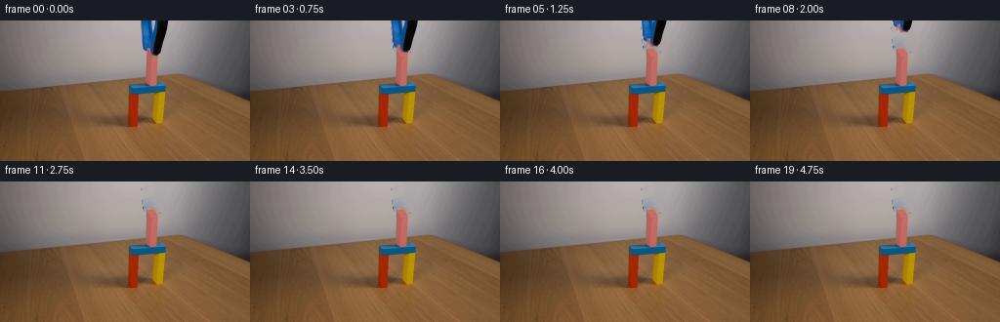
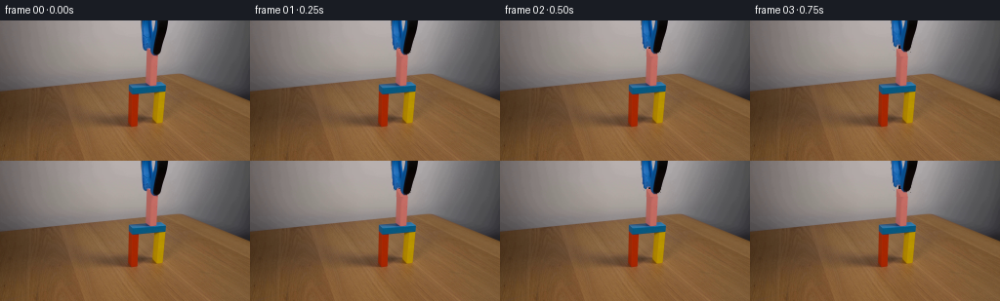
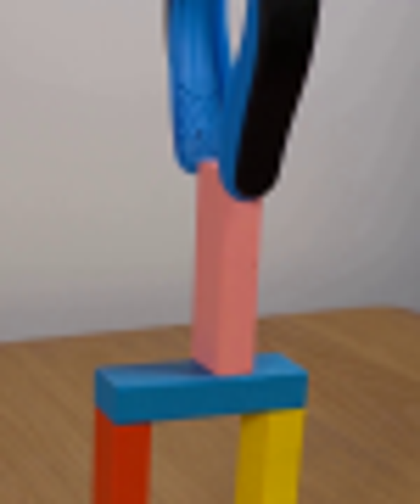
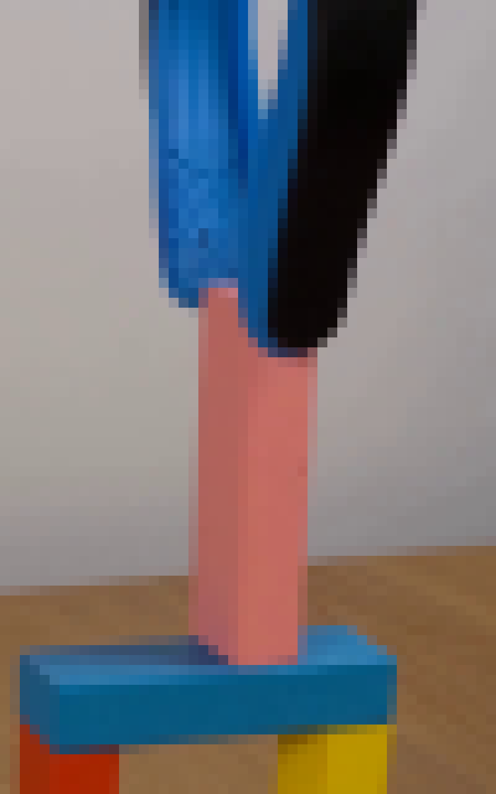
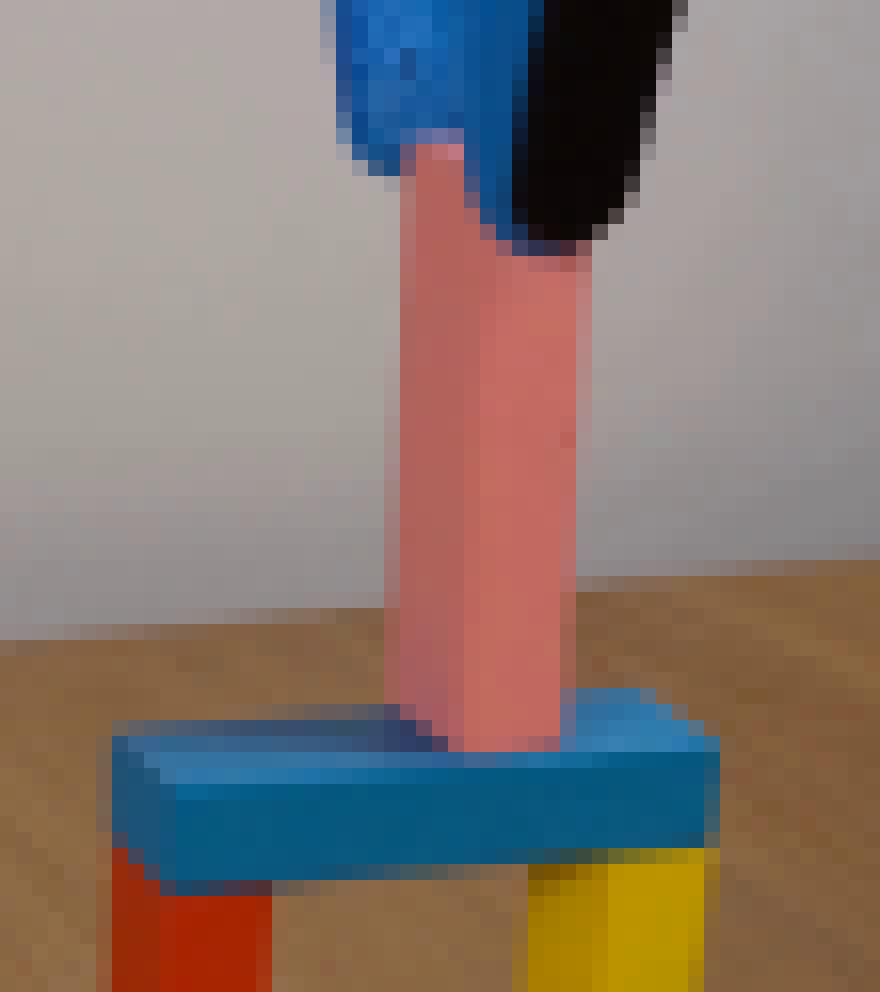
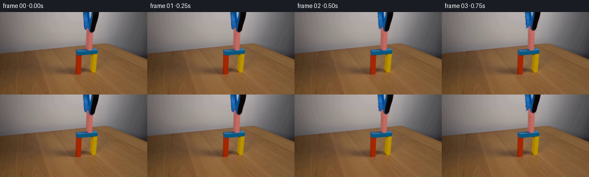
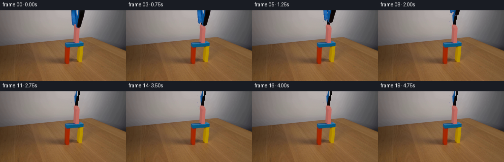

CODING AGENTS AS PIXEL WORLD MODELS
traex/GPT-5.6-Sol · 0172
点击播放 · 原生 RGB 像素
逐轮保存的候选
回放视频、检查图与代码变化。
每份候选均可单独播放。实际图片检查记录在下方工具轨迹中。
候选 01播放与检查图
点击播放 · 原生 RGB 像素

展开代码变化
--- 上一保存版本
+++ 本次保存版本
@@ -0,0 +1,165 @@
+"""Generate the locked-camera block-placement demonstration.
+
+The supplied image is already the instant at which the pink block has made
+contact with the bridge. The only motion needed is therefore the vertical
+withdrawal of the blue/black gripper. A clean plate is made from the local
+wall texture and from the visible faces of the pink block, and the original
+gripper pixels are translated over it. This keeps the photographed lighting,
+grain, perspective, and all of the stationary scene exactly consistent.
+"""
+
+from pathlib import Path
+
+import cv2
+import numpy as np
+from PIL import Image
+
+import artifact_io
+
+
+W, H = 256, 144
+
+
+def polygon_mask(points):
+ mask = np.zeros((H, W), np.uint8)
+ cv2.fillPoly(mask, [np.asarray(points, np.int32)], 255)
+ return mask
+
+
+def make_clean_plate(first):
+ """Reconstruct the few wall/block pixels hidden by the end effector."""
+ # This silhouette is deliberately tight around the two fingers. Inpaint
+ # only within this small area so that the rest of the supplied photograph
+ # remains bit-for-bit untouched.
+ blue_area = polygon_mask(
+ [(144, -3), (160, -3), (159, 9), (157, 22), (157, 29),
+ (159, 33), (156, 36), (152, 35), (148, 31), (146, 24)]
+ )
+ black_area = polygon_mask(
+ [(158, -3), (173, -3), (170, 12), (167, 23), (164, 31),
+ (161, 36), (157, 35), (156, 29), (157, 18)]
+ )
+ removal = cv2.bitwise_or(blue_area, black_area)
+
+ # OpenCV expects BGR; TELEA produces a smooth continuation of the softly
+ # shaded wall without introducing a flat synthetic patch.
+ plate = cv2.cvtColor(first, cv2.COLOR_RGB2BGR)
+ plate = cv2.inpaint(plate, removal, 5.0, cv2.INPAINT_TELEA)
+ plate = cv2.cvtColor(plate, cv2.COLOR_BGR2RGB)
+
+ # Reconstruct the small upper portion of the pink cuboid which is hidden by
+ # the jaws. Supersampled masks provide edges matching the source image's
+ # naturally soft one-pixel antialiasing.
+ scale = 4
+ mh, mw = H * scale, W * scale
+
+ def soft_poly(points):
+ m = np.zeros((mh, mw), np.uint8)
+ pts = np.asarray([(x * scale, y * scale) for x, y in points], np.int32)
+ cv2.fillPoly(m, [pts], 255, lineType=cv2.LINE_AA)
+ return cv2.resize(m, (W, H), interpolation=cv2.INTER_AREA).astype(np.float32) / 255.0
+
+ # Top face, shaded left face, and brighter front face. Their colors are
+ # sampled/continued from the corresponding visible faces just below the
+ # fingers rather than chosen independently.
+ top = soft_poly([(150, 29), (157, 29), (161, 34), (154, 35)])
+ left = soft_poly([(150, 29), (154, 35), (154, 66), (149, 62)])
+ front = soft_poly([(154, 35), (161, 34), (161, 61), (157, 66), (154, 66)])
+
+ yy = np.arange(H, dtype=np.float32)[:, None]
+ # Subtle illumination falloff measured on the already-visible block.
+ fade = np.clip((yy - 35.0) / 31.0, 0.0, 1.0)[..., None]
+ left_hi = np.array([180., 101., 94.], np.float32)
+ left_lo = np.array([169., 96., 91.], np.float32)
+ front_hi = np.array([199., 112., 102.], np.float32)
+ front_lo = np.array([190., 103., 94.], np.float32)
+ left_rgb = left_hi + (left_lo - left_hi) * fade
+ front_rgb = front_hi + (front_lo - front_hi) * fade
+ top_rgb = np.empty((H, W, 3), np.float32)
+ xshade = np.linspace(0.0, 1.0, W, dtype=np.float32)[None, :, None]
+ top_rgb[:] = np.array([194., 111., 103.], np.float32)
+ top_rgb += xshade * np.array([5., 2., 0.], np.float32)
+
+ # Only paint the hidden cap (y <= 36). Below that, retain all original
+ # photographed cuboid pixels, including its contact shadow on the bridge.
+ hidden_band = np.zeros((H, W), np.float32)
+ hidden_band[:37] = 1.0
+ for alpha, color in ((left * hidden_band, left_rgb),
+ (front * hidden_band, front_rgb),
+ (top * hidden_band, top_rgb)):
+ a = alpha[..., None]
+ plate = np.clip(plate.astype(np.float32) * (1.0 - a) + color * a,
+ 0, 255).astype(np.uint8)
+
+ return plate, removal
+
+
+def extract_gripper(first, plate, broad_area):
+ """Return a tight, softly edged alpha matte for the visible gripper."""
+ # Difference from the clean plate reliably includes dark/blue antialiased
+ # edge pixels while rejecting the stationary pink block beneath the jaws.
+ delta = np.max(np.abs(first.astype(np.int16) - plate.astype(np.int16)), axis=2)
+ matte = ((delta > 13) & (broad_area > 0)).astype(np.uint8) * 255
+
+ # Preserve narrow edge pixels but soften only outward by about half a pixel.
+ # The solid center remains opaque and hence keeps the source's real texture.
+ expanded = cv2.dilate(matte, np.ones((3, 3), np.uint8), iterations=1)
+ soft = cv2.GaussianBlur(expanded, (3, 3), 0.55).astype(np.float32) / 255.0
+ solid = matte.astype(np.float32) / 255.0
+ alpha = np.maximum(solid, soft * 0.72)
+ alpha[delta < 5] = 0.0
+ return np.clip(alpha, 0.0, 1.0)
+
+
+def translate_rgba(rgb, alpha, dx, dy):
+ """Subpixel-translate RGB and alpha, with pixels outside the frame clipped."""
+ matrix = np.float32([[1, 0, dx], [0, 1, dy]])
+ moved_rgb = cv2.warpAffine(
+ rgb, matrix, (W, H), flags=cv2.INTER_LINEAR,
+ borderMode=cv2.BORDER_CONSTANT, borderValue=(0, 0, 0)
+ ).astype(np.float32)
+ moved_a = cv2.warpAffine(
+ alpha, matrix, (W, H), flags=cv2.INTER_LINEAR,
+ borderMode=cv2.BORDER_CONSTANT, borderValue=0
+ ).astype(np.float32)
+ return moved_rgb, moved_a
+
+
+def generate(case_dir):
+ case_dir = Path(case_dir)
+ first = np.asarray(Image.open(case_dir / "first_frame.png").convert("RGB"), dtype=np.uint8)
+ assert first.shape == (H, W, 3)
+
+ plate, removal = make_clean_plate(first)
+ alpha = extract_gripper(first, plate, removal)
+
+ # A smooth ease-in/ease-out withdrawal: contact is held very briefly,
+ # followed by about 2.5 seconds of upward motion and then a stable result.
+ # The object is already partly outside the upper frame, so 39 px removes it.
+ offsets = [0.0, -0.5, -1.6, -3.5, -6.2, -9.8, -14.2, -19.2,
+ -24.7, -30.4, -36.0, -41.0]
+
+ frames = []
+ for index in range(20):
+ if index == 0:
+ # Explicit copy guarantees the contract's pixel-identical frame 00.
+ frames.append(first.copy())
+ continue
+
+ dy = offsets[min(index, len(offsets) - 1)]
+ if dy <= -40.0:
+ frame = plate.copy()
+ else:
+ moved_rgb, moved_a = translate_rgba(first, alpha, 0.0, dy)
+ a = moved_a[..., None]
+ frame = np.clip(plate.astype(np.float32) * (1.0 - a) + moved_rgb * a,
+ 0, 255).astype(np.uint8)
+ frames.append(frame)
+
+ frames = np.stack(frames).astype(np.uint8)
+ artifact_io.save(frames, case_dir)
+ return frames
+
+
+if __name__ == "__main__":
+ generate(Path(__file__).resolve().parent)
候选 02播放与检查图
点击播放 · 原生 RGB 像素
展开代码变化
--- 上一保存版本
+++ 本次保存版本
@@ -41,11 +41,23 @@
)
removal = cv2.bitwise_or(blue_area, black_area)
- # OpenCV expects BGR; TELEA produces a smooth continuation of the softly
- # shaded wall without introducing a flat synthetic patch.
- plate = cv2.cvtColor(first, cv2.COLOR_RGB2BGR)
- plate = cv2.inpaint(plate, removal, 5.0, cv2.INPAINT_TELEA)
- plate = cv2.cvtColor(plate, cv2.COLOR_BGR2RGB)
+ # Continue each wall scanline between clean samples immediately to either
+ # side. This is preferable to generic inpainting here: the wall is a very
+ # smooth horizontal lighting gradient, while inpainting can accidentally
+ # pull blue jaw pixels into the fill near such a narrow object.
+ plate = first.copy().astype(np.float32)
+ for y in range(37):
+ xs = np.flatnonzero(removal[y])
+ if not len(xs):
+ continue
+ lo, hi = int(xs.min()), int(xs.max())
+ lx, rx = max(0, lo - 4), min(W - 1, hi + 4)
+ left = np.median(first[y, max(0, lx - 2):lx + 1], axis=0)
+ right = np.median(first[y, rx:min(W, rx + 3)], axis=0)
+ for x in xs:
+ t = (x - lx) / max(1, rx - lx)
+ plate[y, x] = left * (1.0 - t) + right * t
+ plate = np.clip(plate, 0, 255).astype(np.uint8)
# Reconstruct the small upper portion of the pink cuboid which is hidden by
# the jaws. Supersampled masks provide edges matching the source image's
@@ -99,15 +111,24 @@
# Difference from the clean plate reliably includes dark/blue antialiased
# edge pixels while rejecting the stationary pink block beneath the jaws.
delta = np.max(np.abs(first.astype(np.int16) - plate.astype(np.int16)), axis=2)
- matte = ((delta > 13) & (broad_area > 0)).astype(np.uint8) * 255
+ yy, xx = np.mgrid[:H, :W]
+ r, g, b = (first[..., i].astype(np.int16) for i in range(3))
+ blue_like = (b > r + 10) & (b > g + 7)
+ black_like = (r < 105) & (g < 105) & (b < 112) & (xx >= 154)
- # Preserve narrow edge pixels but soften only outward by about half a pixel.
+ # Above y=29 there is only wall behind the tool, so difference gives the
+ # best antialiased outline. At the contact point, use color semantics to
+ # exclude every pink block pixel from the moving layer.
+ upper = (yy < 29) & (delta > 10)
+ contact = (yy >= 29) & (blue_like | black_like)
+ matte = ((upper | contact) & (broad_area > 0)).astype(np.uint8) * 255
+
+ # Preserve narrow edge pixels but soften outward by less than one pixel.
# The solid center remains opaque and hence keeps the source's real texture.
- expanded = cv2.dilate(matte, np.ones((3, 3), np.uint8), iterations=1)
- soft = cv2.GaussianBlur(expanded, (3, 3), 0.55).astype(np.float32) / 255.0
+ soft = cv2.GaussianBlur(matte, (3, 3), 0.42).astype(np.float32) / 255.0
solid = matte.astype(np.float32) / 255.0
- alpha = np.maximum(solid, soft * 0.72)
- alpha[delta < 5] = 0.0
+ alpha = np.maximum(solid, soft * 0.62)
+ alpha[(yy >= 29) & ~(blue_like | black_like)] = 0.0
return np.clip(alpha, 0.0, 1.0)
候选 03播放与检查图
点击播放 · 原生 RGB 像素

展开代码变化
--- 上一保存版本
+++ 本次保存版本
@@ -58,6 +58,19 @@
t = (x - lx) / max(1, rx - lx)
plate[y, x] = left * (1.0 - t) + right * t
plate = np.clip(plate, 0, 255).astype(np.uint8)
+
+ # Include the one-pixel antialias fringe just outside the hard polygon.
+ # It is recognizable as excess blue against the otherwise neutral wall.
+ yy0, xx0 = np.mgrid[:H, :W]
+ rr, gg, bb = (first[..., i].astype(np.int16) for i in range(3))
+ fringe = (yy0 < 30) & (xx0 >= 143) & (xx0 <= 170) & (bb > rr + 14)
+ for y in range(30):
+ for x in np.flatnonzero(fringe[y]):
+ left = np.median(first[y, max(0, x - 7):max(1, x - 4)], axis=0)
+ right = np.median(first[y, min(W - 1, x + 4):min(W, x + 7)], axis=0)
+ # Pick the more neutral candidate, avoiding another edge pixel.
+ cands = (left, right)
+ plate[y, x] = min(cands, key=lambda c: float(max(c) - min(c)))
# Reconstruct the small upper portion of the pink cuboid which is hidden by
# the jaws. Supersampled masks provide edges matching the source image's
候选 04播放与检查图
点击播放 · 原生 RGB 像素

展开代码变化
代码未变化；重新保存了产物。
候选 05播放与检查图
点击播放 · 原生 RGB 像素

展开代码变化
--- 上一保存版本
+++ 本次保存版本
@@ -41,6 +41,13 @@
)
removal = cv2.bitwise_or(blue_area, black_area)
+ # Add the one-pixel blue antialias fringe just outside the hard silhouette
+ # before reconstructing the wall (never sample from it afterward).
+ yy0, xx0 = np.mgrid[:H, :W]
+ rr, gg, bb = (first[..., i].astype(np.int16) for i in range(3))
+ fringe = (yy0 < 30) & (xx0 >= 143) & (xx0 <= 171) & (bb > rr + 14)
+ removal[fringe] = 255
+
# Continue each wall scanline between clean samples immediately to either
# side. This is preferable to generic inpainting here: the wall is a very
# smooth horizontal lighting gradient, while inpainting can accidentally
@@ -58,19 +65,6 @@
t = (x - lx) / max(1, rx - lx)
plate[y, x] = left * (1.0 - t) + right * t
plate = np.clip(plate, 0, 255).astype(np.uint8)
-
- # Include the one-pixel antialias fringe just outside the hard polygon.
- # It is recognizable as excess blue against the otherwise neutral wall.
- yy0, xx0 = np.mgrid[:H, :W]
- rr, gg, bb = (first[..., i].astype(np.int16) for i in range(3))
- fringe = (yy0 < 30) & (xx0 >= 143) & (xx0 <= 170) & (bb > rr + 14)
- for y in range(30):
- for x in np.flatnonzero(fringe[y]):
- left = np.median(first[y, max(0, x - 7):max(1, x - 4)], axis=0)
- right = np.median(first[y, min(W - 1, x + 4):min(W, x + 7)], axis=0)
- # Pick the more neutral candidate, avoiding another edge pixel.
- cands = (left, right)
- plate[y, x] = min(cands, key=lambda c: float(max(c) - min(c)))
# Reconstruct the small upper portion of the pink cuboid which is hidden by
# the jaws. Supersampled masks provide edges matching the source image's
候选 06播放与检查图

可观测工具轨迹
实际执行的命令与返回图片。
命令 1exit 0
/bin/bash -lc "cat prompt.txt && printf '\\n--- GENERATION_RULES ---\\n' && cat GENERATION_RULES.md"
命令 2exit 0
/bin/bash -lc "find . -maxdepth 2 -type f -printf '%p %s bytes\\n' | sort"
命令 3exit 0
/bin/bash -lc "python3 - <<'PY'
from PIL import Image
im=Image.open('first_frame.png')
print(im.size, im.mode)
PY
ffmpeg -version | head -n 2
python3 - <<'PY'
mods=['cv2','numpy','PIL','imageio']
for m in mods:
try:
x=__import__(m); print(m,'ok',getattr(x,'__version__',''))
except Exception as e: print(m,'missing',e)
PY"命令 4exit 0
/bin/bash -lc "sed -n '1,260p' artifact_io.py"
命令 5exit 0
/bin/bash -lc "python3 - <<'PY'
from PIL import Image
im=Image.open('first_frame.png')
im.crop((115,0,190,90)).resize((600,720)).save('.tmp/zoom.png')
PY"命令 6exit 0
/bin/bash -lc "python3 - <<'PY'
import cv2, numpy as np
im=cv2.imread('first_frame.png')
# print representative colors and coords in object area based HSV segmentation
hsv=cv2.cvtColor(im,cv2.COLOR_BGR2HSV)
for name,mask in [
('red', ((hsv[:,:,0]<12)|(hsv[:,:,0]>170))&(hsv[:,:,1]>100)),
('yellow',(hsv[:,:,0]>20)&(hsv[:,:,0]<40)&(hsv[:,:,1]>120)),
('blue',(hsv[:,:,0]>85)&(hsv[:,:,0]<130)&(hsv[:,:,1]>80)),
('pink',(hsv[:,:,0]>160)&(hsv[:,:,0]<180)&(hsv[:,:,1]>45)&(hsv[:,:,2]>70))]:
y,x=np.where(mask)
print(name, (x.min(),y.min(),x.max(),y.max()), len(x))
PY"命令 7exit 0
/bin/bash -lc "python3 - <<'PY'
from PIL import Image
im=Image.open('first_frame.png')
im.crop((130,0,180,80)).resize((800,1280), Image.Resampling.NEAREST).save('.tmp/zoom_nn.png')
PY"命令 8exit 0
/bin/bash -lc "python3 - <<'PY'
from PIL import Image
import numpy as np
im=np.array(Image.open('first_frame.png'))
# pixel rows x=138..175 quantized descriptions
for y in [0,5,10,20,25,28,30,32,34,36,40,50,60,65,68,70,73]:
print('\\ny=',y)
for x in range(138,176,2):
r,g,b=im[y,x]
# nearest semantic rough
if b>r*1.25 and b>g*1.15: c='B'
elif r>g*1.25 and r>b*1.15: c='P' if g>60 else 'R'
elif max(r,g,b)<70:c='K'
elif max(r,g,b)-min(r,g,b)<20:c='.'
else:c='o'
print(c,end='')
print()
# exact RGB selected
for y in [20,28,30,32,34,36,40,50,60,68]:
print(y, [(x, im[y,x].tolist()) for x in [142,144,146,148,150,152,154,156,158,160,162,164,166,168,170,172]])
PY"命令 9exit 0
/bin/bash -lc "python3 - <<'PY'
from PIL import Image
im=Image.open('first_frame.png')
im.crop((125,20,180,82)).resize((880,992),Image.Resampling.NEAREST).save('.tmp/object_nn.png')
PY"命令 10exit 0
/bin/bash -lc "python3 generate.py && python3 - <<'PY'
from PIL import Image
import numpy as np
im=np.array(Image.open('first_frame.png'))
f=np.array(Image.open('frames/00.png'))
print('frame00 identical:', np.array_equal(im,f), 'maxdiff',np.abs(im.astype(int)-f.astype(int)).max())
z=np.load('pixels.npz')['pixels']
print('pixels',z.shape,z.dtype,'files',len(list(__import__('pathlib').Path('frames').glob('*.png'))))
PY"命令 11exit 0
/bin/bash -lc "python3 generate.py && python3 - <<'PY'
from PIL import Image
import numpy as np
src=np.array(Image.open('first_frame.png')); f0=np.array(Image.open('frames/00.png'))
print('identical',np.array_equal(src,f0))
for i in [0,3,5,8,11,19]:
a=np.array(Image.open(f'frames/{i:02d}.png'))
print(i, 'changed',np.count_nonzero(np.any(a"'!=src,axis=2)))
PY'命令 12exit 0
/bin/bash -lc "python3 - <<'PY'
from PIL import Image
import numpy as np
x=np.array(Image.open('frames/19.png'))
for y in range(0,38):
bad=[]
# compare to interpolated neighbors approximate pixels with blue excess/dark
for xx in range(138,178):
r,g,b=map(int,x[y,xx])
if b>r+15 or (max(r,g,b)<100): bad.append(xx)
if bad: print(y,min(bad),max(bad), [(xx,x[y,xx].tolist()) for xx in bad[:6]])
PY"命令 13exit 0
/bin/bash -lc "python3 generate.py && python3 - <<'PY'
from pathlib import Path
from PIL import Image
import numpy as np
src=np.array(Image.open('first_frame.png')); f0=np.array(Image.open('frames/00.png'))
assert np.array_equal(src,f0)
assert len(list(Path('frames').glob('*.png')))==20
z=np.load('pixels.npz')['pixels']; assert z.shape==(144,256,20) and z.dtype==np.uint32
for p in Path('frames').glob('*.png'):
a=np.array(Image.open(p)); assert a.shape==(144,256,3) and a.dtype==np.uint8
print('validated: 20 RGB frames, 256x144, frame00 exact, artifact package readable')
PY"命令 14exit 0
/bin/bash -lc "python3 - <<'PY'
from PIL import Image
import numpy as np
a=np.array(Image.open('frames/19.png'))
for y in range(37):
bad=[]
for x in range(135,180):
r,g,b=map(int,a[y,x])
if (max(r,g,b)<120) or b>r+15: bad.append(x)
if bad: print(y,min(bad),max(bad),[(x,a[y,x].tolist()) for x in bad])
PY"命令 15exit 0
/bin/bash -lc "python3 generate.py && python3 - <<'PY'
from pathlib import Path
from PIL import Image
import numpy as np
src=np.array(Image.open('first_frame.png')); f0=np.array(Image.open('frames/00.png'))
assert np.array_equal(src,f0)
assert len(list(Path('frames').glob('*.png')))==20
z=np.load('pixels.npz')['pixels']; assert z.shape==(144,256,20) and z.dtype==np.uint32
print('final validation passed')
PY"视觉工具实际返回图片 1

视觉工具实际返回图片 2

视觉工具实际返回图片 3

视觉工具实际返回图片 4

视觉工具实际返回图片 5

视觉工具实际返回图片 6

视觉工具实际返回图片 7

视觉工具实际返回图片 8

视觉工具实际返回图片 9
保存候选 6 份；完成命令 15 次；可验证图片返回 9 张。原始 API 响应与完整日志保留在本地。